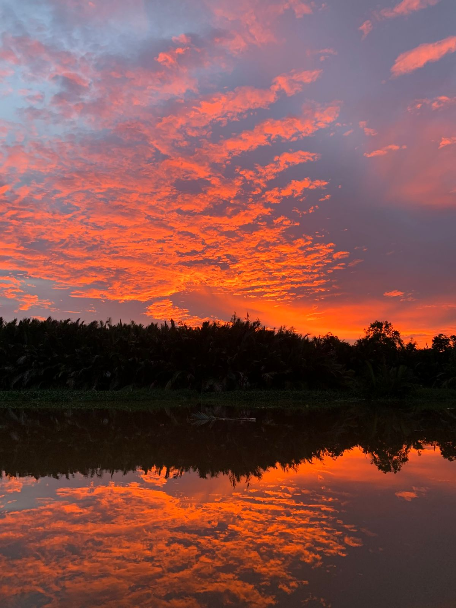
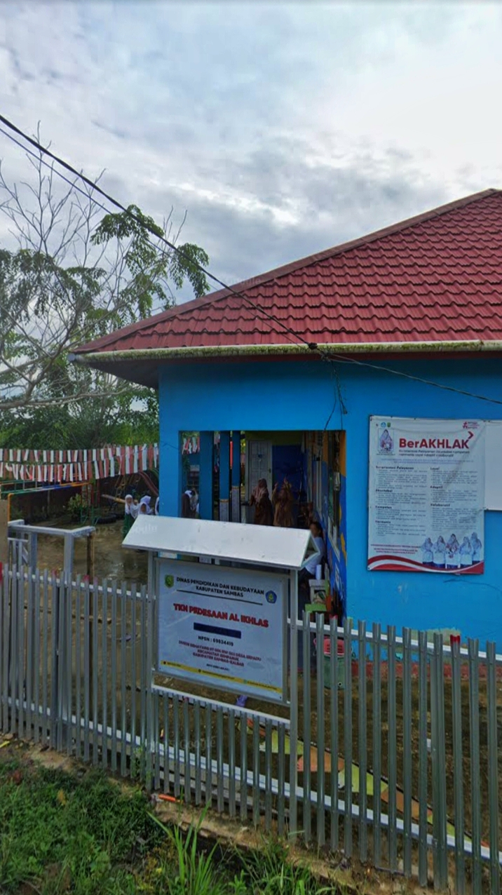
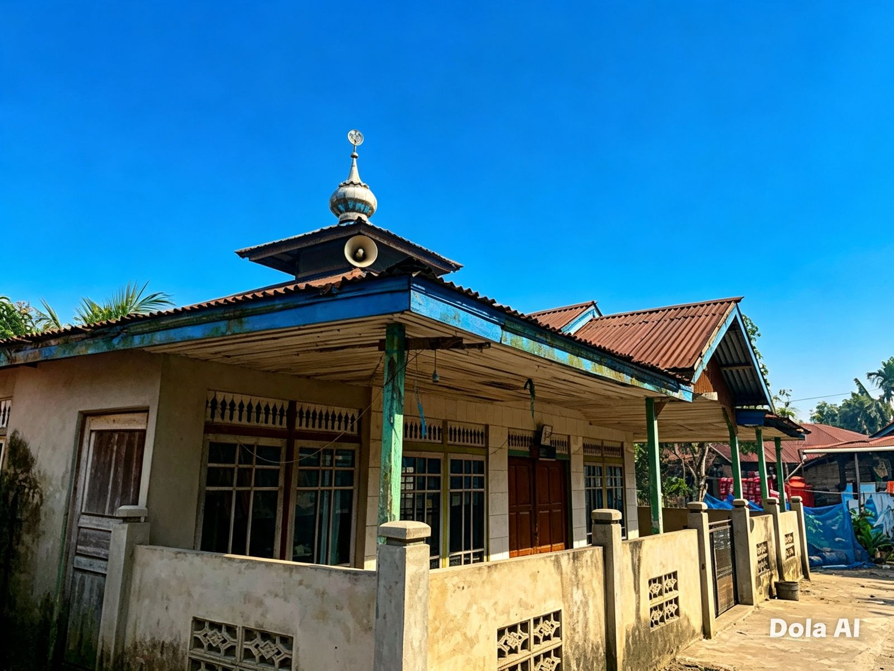
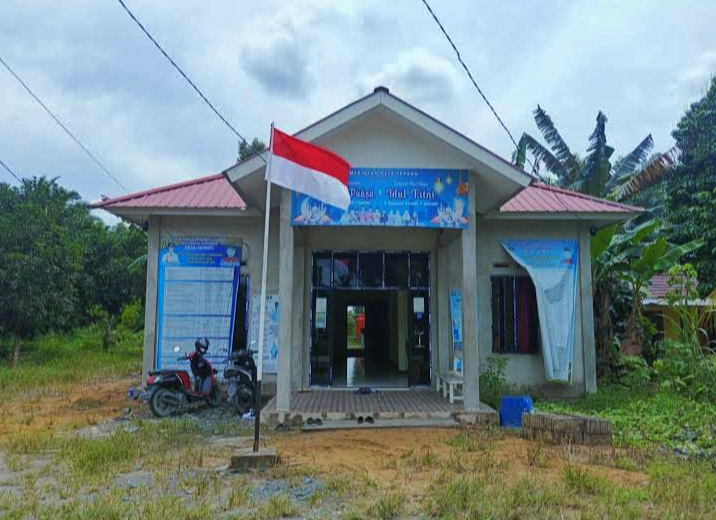

— Kumpulan Cerita Visual —
📸 Galeri Keindahan Desa
Jejak langkah di tanah hijau. Di sini, setiap sudut bercerita — tentang alam yang bernapas, masyarakat yang hidup harmonis bersama alam.

Pemandangan Alam
Matahari menyapa desa di pagi hari

Hamparan Sawah
Hamparan Sawah hijau hasil keringat petani

Aliran Sungai & Sunset
Sungai dan Sunset Yang Cantik

TK / PAUD
Bibit harapan mulai tumbuh di sini

SD Sekolah Dasar
Pintu gerbang masa depan

Masjid Desa
Menara iman menenangkan jiwa

Kantor Desa
Pusat pelayanan dan kebersamaan

Jalan Desa
Ketenangan yang merasuk ke hati